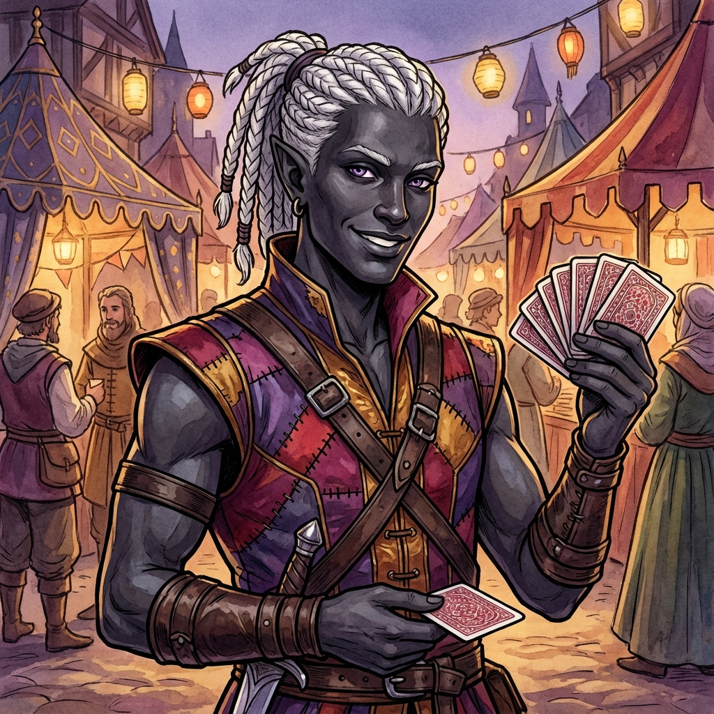

He arrived hoping for acceptance away from the old prejudices of his homeland. Now he performs in the marketplace, using his illusions and sleight-of-hand to delight crowds while keeping a watchful eye for threats to the citadel's gentle peace.

Malrik
Drow Rogue and Street Performer
Class: Rogue
Race: Drow
Age: Young adult
Background
Malrik never truly fit in anywhere else. He came to Everpeak as a young adult a couple of decades ago, after hearing rumors of a mountain citadel that welcomed all races who wished to rebuild and protect something precious.
Personality
Charming, theatrical, and watchful. Malrik presents a roguish, playful exterior while maintaining sharp observation of everything around him. He seeks purpose and has found it in protecting Everpeak.
Physical Appearance
Lean, agile drow build (about 5'9"). Distinctive charcoal-dark skin. Striking white hair pulled back in a ponytail. Sharp violet eyes, always observing. Angular, handsome features with graceful, performer's movements.
Abilities & Traits
**Rogue Abilities:**
- **Sneak Attack:** Massive damage to surprised foes
- **Cunning Action:** Bonus action Dash, Disengage, or Hide
- **Evasion:** Take half damage on failed Dex saves
- **Uncanny Dodge:** Reduce incoming damage
- **Expertise:** Double proficiency in chosen skills
**Drow Traits:**
- **Superior Darkvision:** See 120 feet in darkness
- **Sunlight Sensitivity:** Disadvantage in bright light
- **Drow Magic:** Dancing Lights, Faerie Fire, Darkness
- **Fey Ancestry:** Advantage against charm
- **Sneak Attack:** Massive damage to surprised foes
- **Cunning Action:** Bonus action Dash, Disengage, or Hide
- **Evasion:** Take half damage on failed Dex saves
- **Uncanny Dodge:** Reduce incoming damage
- **Expertise:** Double proficiency in chosen skills
**Drow Traits:**
- **Superior Darkvision:** See 120 feet in darkness
- **Sunlight Sensitivity:** Disadvantage in bright light
- **Drow Magic:** Dancing Lights, Faerie Fire, Darkness
- **Fey Ancestry:** Advantage against charm
Equipment
- Colorful performer's garb (purples, reds, golds)
- Dark leather armor hidden beneath
- Multiple daggers (concealed)
- Deck of playing cards for tricks
- Acrobat's gear (light, flexible)
- Venomous Dagger (drow item) or Flickerfoot Shoes
- Dark leather armor hidden beneath
- Multiple daggers (concealed)
- Deck of playing cards for tricks
- Acrobat's gear (light, flexible)
- Venomous Dagger (drow item) or Flickerfoot Shoes
Player Information
**Player: Liam (Age 13)**
**Playstyle:** Stealth, skill-based solutions, social manipulation. Values narrative integration and creative problem-solving.
**Theme Preferences:** Intrigue, subterfuge, theatrical flair